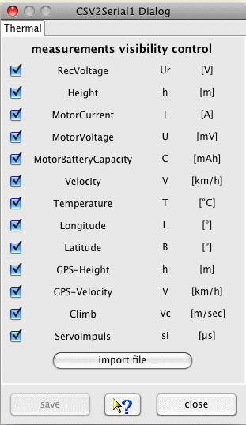
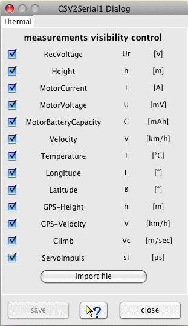
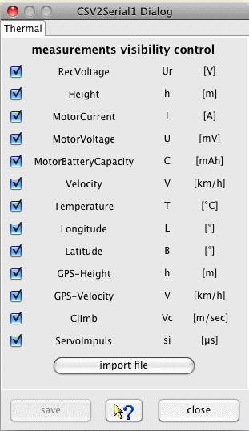

The device dialog is used to configure the visualization of the displayed data. Using the "open file" button a file selection dialog enable to open new files while applying the current visible visualization configuration. The dialog is build up dynamically and might be different for each device. As example two different dialogs are shown:

Hint: The configured visualization profile is also used if a channel/configuration is selected using the tools bar combo box and the data are imported with the "import file" button.